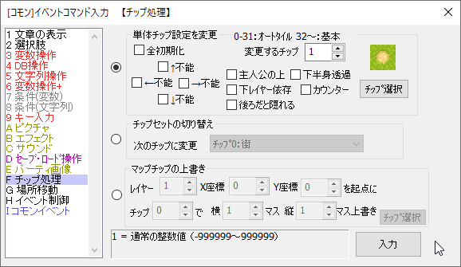

イベントコマンド 【チップ処理】
チップの性質やチップセットを一時的に変更したり、マップそのものを書き換える機能です。

【各機能の説明】
・単体チップ設定を変更
マップチップの通行設定や特徴を、一時的に変化させます。変更させたいチップは、0～31番がオートタイル（つまりマップチップウィンドウでいうところの1～4段目のタイル）、32番以降は5段目以降のチップに対応しています。
実行すると、8属性が設定し直されます（例えば、チェックを全て外してチップ変更すれば、「どの方向にも通行可能」で「茂みなどの特徴も何も持たない」チップになります）。この変更はマップを変更するまで続きます。
主な用途として、たとえば海だけ移動できる乗り物を作る際などに利用できます。
・「全初期化」オプション … 全てのチップの通行設定を元に戻します。
・チップセットの切り替え
現在いるマップのチップセットを変更します。変数で指定することも可能です。
たとえば、夜のチップ、昼のチップを切り替えたりして、より少ないマップ数で
物語を演出できるかもしれません。
※切り替えたチップセットは、プレイヤーが他のマップに場所移動すると元に戻ります。
・マップチップの上書き
現在いるマップの指定地点を、指定したチップで書き換えます。「対象レイヤー」と、「起点となるX、Y座標」、「チップ番号」、「変更したい分の縦、横のサイズ」を指定してください。
「不思議なダンジョン」的な自動生成ダンジョンを作ったり、雪道を歩くと足跡が付いたチップに変わったり、ダンジョンクリエイトRPGを作ったり、壁を調べると部屋ができるなど、さまざまな応用が可能です。
※マップチップを上書きした分は、プレイヤーが他のマップに移動すると元に戻ります。